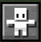

This part will explain everything on the home menu of Minecraft.
The version of the game is 1.18.2.
Brief explaination:
-
Singleplayer
Multiplayer
Options
Minecraft Realms
- In the background, a random scenery is in a loop
- There is the version of the game on the left-bottom, here v1.18.2
-
You can change the language of your game by this button

- You can have access to the accessibility settings by this button 

The Minecraft's home menu is composed of 4 big parts:
Singleplayer:
-
You must give a name to your world
If you do not give a name, your world will be called 'New_World' by default
Can be rename later -
You must choose in which mode you want to play: Survival, Creative or Hardcore.
- Survival : Search for resources, craft, gain levels, health and hunger
- Hardcore : Same as Survival Mode, locked at hardest difficulty, and one life only
- Creative : Unlimited resources, free flying and destroy blocks instantly
-
Fourth type of difficulty are existing:
- Peaceful: Hostile mobs cannot spawn, you cannot lose hunger and you automatically restore your health
- Easy: Hostile mobs sometimes spawn
- Normal: Hostile mobs often spawn
- Hard: Hostile mobs always spawn
Depending on the difficulty, differents parameters in-game can change, like the probability of villager to change into a zombie-villager after being killed by a zombie. -
Allows the Cheats means that you can use commands in game Every types of commands are actually existing like /gamemode' which you can change your mode in-game or /experience which you can give you experience.
Remark:
In the Minecraft's community, using the cheats are prohibited, do you really want to cheat on a game ? It's up to you ! - This section is one of the new of the 1.18. In fact, you can play with your textures in-game.
- This section allows you to modify if you want a lot of parameters in-game like the cycle day/night or keeping your inventory after your dead or not. By the command /gamerule, you can change during the game these parameters.
-
Each Minecraft world is unique and there are determinated by they seed. You can enter the number you want on it, the game will creates your world with it. Some seed are better than anothers so if you want to play in a specfic
seed, enter the seed in the form.
With /seed, you can know the seed of your world and shared it ! -
This sections allows you to have a world with or without structures. There is a lot of structures in Minecraft like villages of donjons.
Playing without disable you to finish the game ! -
This parameter is very important because it allows you to choose between different types of world generations.
Fifth type of generations are existing:- Default: Normal world with every existing types of biomes
- Superflat: Flat world that you can customize with presets parameters. Very useful in creative
- Large Biomes: Same as the Default but the biomes generated will be bigger
- Amplified: World with a lot of mountains and floating islands. Requieres a good computer.
- Single Biome: World with only one biome that you can choose.
- Give you at the start a chest with some basic loot in it.
- You can import settings from your device to play with your settings !
-
After setting your parameters, click on Create New World and your aventure start !
Click here to start the aventure ! - If you click on Cancel, you will go back to the Home menu.
You decide to start the game, to begin the aventure...
Before being immersed in the game, you need to create your world.